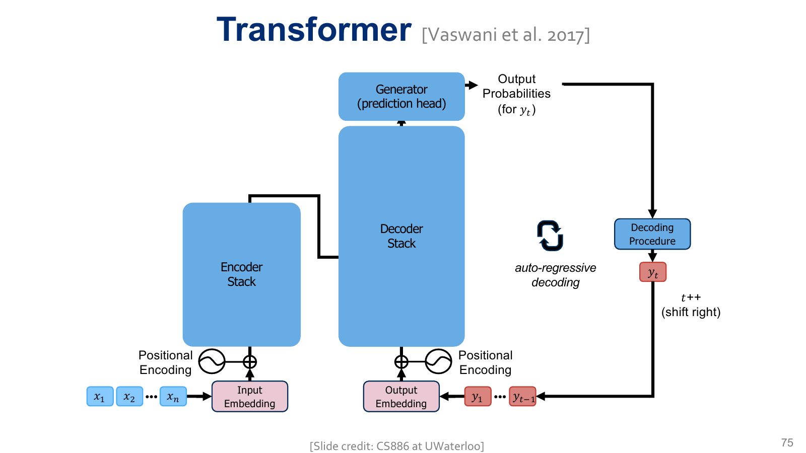

A language model needs more than an attention formula: it needs a precise rule for which information is available to each prediction. That rule determines valid training, padding behavior, architectural variants, and which computations can be reused during generation.
- Scope
- Slides 51–125. Slide 51 reprises the leakage question from Handout #11. Slides 112–125 are assigned reading to complete at home, guided by §7 and Handout #11 §9.4.
- Time
- 60–80 minutes for the core reading and checks; 30–45 more for the assigned at-home implementation reading; extra time for optional code experiments.
- By the end
- Construct causal and padding masks; align inputs and labels; distinguish three attention patterns; derive full-sequence and cached decoding cost; test a small decoder.
- Assumes
- Handout #11's Q/K/V, heads, block structure, positions, and shifted targets. $B$ is batch size, $T$ sequence length, $D$ model width, $H$ heads, and $L$ layers.
Slide-to-reading map
| Slides | Reading |
|---|---|
| 51–61 | §1: causal masking and a dependence test |
| 62–65 | §2: padding, labels, positions |
| 66 | §1 explorer; optional external demo at the end |
| 67–84 | §3: encoder, decoder, cross-attention |
| 85–92 | §4: arithmetic, memory, IO |
| 93–106 | §5: KV cache and decoding cost |
| 107–111 | §6: encoder–decoder cost |
| 112–125 (assigned at home) | #11 §9.4 and §7: assembly and implementation reading. §8: optional nanoGPT extension |
1The causal mask defines an information boundary
Output at position $i$ predicts the next token, so it may use the current input and earlier inputs: $j\le i$. Set future-key scores to negative infinity before softmax. With zero-based indices and four positions, the additive mask is:
$$M=\begin{bmatrix}0&-\infty&-\infty&-\infty\\0&0&-\infty&-\infty\\0&0&0&-\infty\\0&0&0&0\end{bmatrix},\qquad A=\operatorname{softmax}_{\text{keys}}(S+M).$$The diagonal is allowed: input at $i$ is context for target $i+1$. The mask is a rule about availability, not a learned judgment of relevance. An allowed key can still receive a tiny weight. A dense implementation may calculate all scores before masking, so causality alone does not automatically save half the arithmetic.
1.1 Masking changes the normalization
Return to the three scores $[\log2,0,0]$ and values $[2,0]$, $[0,2]$, $[4,4]$ from Handout #11. At query position 1, only keys 0 and 1 are allowed. Masking the third score gives $[\log2,0,-\infty]$, weights $[2/3,1/3,0]$, and output $[4/3,2/3]$.
If instead you zero the third weight after the original softmax, you get $[1/2,1/4,0]$, sum $3/4$, and output $[1,1/2]$. Dividing the surviving weights by their sum would recover the correct result, but pre-softmax masking normalizes once over exactly the allowed set.
Adapted from Spring 2025 Quiz 2, Q3.2, p. 6. Numbers and explanations are adapted for this handout.
At query position 1, take scaled scores $[2,-1,0]$ and an additive mask $[0,0,-\infty]$. A proposed implementation computes scores * mask, then softmax. Explain two failures. Write the intended operation and its probabilities.
Reveal the answer
Multiplication makes the allowed scores both zero, erasing their relative preference. The forbidden score computes $0\times(-\infty)$, which is NaN in floating-point arithmetic. Use scores + mask, or scores.masked_fill(forbidden, float('-inf')). Correct logits $[2,-1,-\infty]$ give probabilities $[0.952574,0.047426,0]$.
The sample's printed solution incorrectly describes multiplying by the additive mask. A Boolean mask for masked_fill is different: its true entries mark positions to overwrite; they are not numerical multipliers.
1.2 Test causality, rather than only inspecting the triangle
Run the model on two sequences identical through position $i$, but with different suffixes after $i$. With dropout disabled, the logits through $i$ should agree within floating-point tolerance. This tests the whole computation, including position handling, normalization, and every layer's mask.
The reasoning is inductive. Initial row $i$ depends only on token $i$ and its position. A masked block retrieves rows $j\le i$; if those rows already depend only on their prefixes, no future input enters. Token-wise normalization, residual addition, and FFNs preserve the boundary. Repeating this argument across layers establishes causality.
A model's training loss plunges when the causal mask is removed, but generation deteriorates. Is this evidence that masking harms learning? What experiment distinguishes leakage from an optimization issue?
Reveal the answer
It may be learning to access the target from the future. Change suffix tokens while keeping the prefix fixed and compare prefix logits. Unmasked outputs can change; a correctly causal model's cannot. Training loss with extra unavailable information is not a fair estimate of generation-time predictive ability.
2Padding needs both an attention rule and a loss rule
Batch tensors need a common length. Padding fills unused slots, but PAD is not ordinary linguistic context. Keep three distinct objects: input IDs, a real-token mask, and target labels. Confusing their roles is a common source of models that “work” while optimizing the wrong objective.
2.1 Shift first, then mark valid targets
Let B be BOS, E be EOS, and P be PAD. For [B, a, b, E, P], form:
| Input IDs | B | a | b | E |
|---|---|---|---|---|
| Targets | a | b | E | ignore |
| Real input key? | yes | yes | yes | yes |
| Score loss? | yes | yes | yes | no |
EOS is a valid target and must be learned. The final input is real, yet its target is padding and its loss is ignored. Thus a real input mask cannot be copied directly into a loss mask. A padded input row's output should also not be scored.
The attention rule combines causality with valid keys:
$$\operatorname{allowed}_{b,i,j}=(j\le i)\land \operatorname{real}_{b,j}.$$Masking PAD keys prevents their values from entering real-token representations. Ignoring PAD targets prevents the loss from rewarding PAD prediction. One does not substitute for the other. Compute the mean over the number of valid targets, not over all padded tensor entries.
2.2 Why left and right padding differ in practice
Right padding keeps real training tokens aligned from column 0. Left padding makes every prompt's last real token sit in the final column, so batched generation can simply read logits[:, -1]. These are convenient conventions, not mathematical restrictions. With right-padded prompts, reading the final column for a short sequence reads a PAD query; instead gather that sequence's last real position.
Position IDs matter too. For left padding, a useful convention numbers real tokens from 0 using the cumulative sum of the real-token mask minus one. Assign a harmless in-range ID to PAD slots. Otherwise the same prompt can receive different learned absolute positions depending on the lengths of its batch companions. The attention mask alone does not fix that change.
Batch the sequences [B,a,b,E,P] and [B,c,E,P,P]. After shifting, how many scored targets are there? If their total negative log-likelihood is 10, what is the mean loss? What would dividing by eight do?
Reveal the answer
There are 3 + 2 = 5 targets, so mean loss is 2 nats. Dividing by the eight tensor slots gives 1.25, artificially lowering the reported loss when more padding is present. cross_entropy(..., ignore_index=...) with mean reduction divides by valid targets when no class weights are supplied.
3Architectures differ in what each query can read
The same dot-product operation supports three attention patterns. Track where queries, keys, and values come from, then determine which edges are allowed.
| Operation | Queries | Keys / values | Allowed information |
|---|---|---|---|
| Encoder self-attention | Source rows | Source rows | All real source positions, on both sides |
| Decoder self-attention | Target-prefix rows | Target-prefix rows | Real target positions up to the query |
| Cross-attention | Decoder rows | Final encoder rows | All real source positions |
An encoder-only model builds bidirectional representations for tasks such as classification or masked-token prediction. A decoder-only LM predicts continuations causally. An encoder–decoder model first represents a source sequence, then generates a target conditional on that source. Architecture alone does not specify the training objective, but the objective and information boundary must agree.
3.1 Cross-attention is rectangular
Let encoder output $E\in\mathbb R^{B\times S\times D}$ have source length $S$, and decoder states $Z\in\mathbb R^{B\times U\times D}$ have target length $U$:
$$Q=ZW_Q,\quad K=EW_K,\quad V=EW_V,\quad A\in\mathbb R^{B\times H\times U\times S}.$$Each target query produces weights over source keys. Softmax is across $S$, not $U$. Cross-attention does not need a source-side triangular mask because the entire source is available before generation begins; source padding still must be masked. The encoder returns a sequence of contextual vectors, not necessarily one compressed vector.

3.2 Teacher forcing in an encoder–decoder
For source the gray chunky cat and target sat on the mat E, the decoder input is B sat on the mat and the labels are sat on the mat E. Every decoder position can see all the source, but only its target prefix. In the standard architecture, each decoder layer's cross-attention reads the final encoder output, with its own projections; it does not read only the encoder layer with the same depth index.
Bidirectional source attention is legitimate because the source is observed conditioning information. Bidirectional target attention would reveal answers. “The encoder can look right” and “the decoder cannot look right” refer to different sequences.
For $B=2,H=4,S=6,U=3$, give the cross-attention weight shape. Should target position 0 be allowed to read source position 5? Should it read target position 2?
Reveal the answer
Shape [2,4,3,6]. Yes to source 5 if it is real; no to target 2 in decoder self-attention. Applying a $3\times3$ causal mask to the $3\times6$ cross-attention matrix confuses the two operations.
4Count arithmetic and stored tensors separately
4.1 Derive cost from matrix shapes
Multiplying $A\in\mathbb R^{n\times m}$ and $B\in\mathbb R^{m\times k}$ produces $nk$ entries, each a length-$m$ dot product. Counting each multiply and addition as one operation gives $nk(2m-1)\approx2nmk$ FLOPs. FLOPs counts operations; FLOP/s is a rate. Neither alone determines elapsed time.
For one ordinary MHA block with $D_{ff}=4D$, ignoring biases, dropout, normalization, activations, and the vocabulary head:
| Operation | Approximate forward FLOPs |
|---|---|
| Q, K, V projections | $6BTD^2$ |
| All heads' $QK^\top$ | $2BT^2D$ |
| All heads' $AV$ | $2BT^2D$ |
| Output projection | $2BTD^2$ |
| Two FFN projections | $16BTD^2$ |
| Total | $24BTD^2+4BT^2D$ |
The scaling is $O(BTD^2+BT^2D)$ per layer. For these constants, the two terms match at $T=6D$. The attention pairwise term grows quadratically with length, but projections and FFNs can dominate at shorter lengths. Backward adds work; this table is a forward-pass approximation, not total training FLOPs.
Adapted from Spring 2025 Quiz 2, Q3.1, p. 5. Numbers and explanations are adapted for this handout.
Consider one head with input width $E$, query/key/value width $R$, batch size $B$, and length $T$. Each of its three projection matrices is $E\times R$. There is no output projection or FFN. Give the output shape and total forward arithmetic in big O. Does constructing Q/K/V itself cost quadratically in $T$?
Reveal the answer
Each projection costs $O(BTER)$; scores and value mixing each cost $O(BT^2R)$. Scaling and softmax add $O(BT^2)$. For positive integer $R$, the total is $O(BTER+BT^2R)$ and output shape is $B\times T\times R$. Q/K/V construction is linear in $T$; the quadratic term comes from interactions between token pairs. If $E\ne R$, this primitive is not dimension-preserving. A complete residual block needs an output map back to its residual width. Setting $E=R=D$ recovers the familiar equal-width scaling.
4.2 Quadratic storage can matter before quadratic arithmetic dominates
A straightforward attention implementation stores scores or probabilities of shape [B,H,T,T]. At $B=2,H=8,T=1024$, one such tensor has 16,777,216 entries: 32 MiB at two bytes per entry. Doubling $T$ makes that one tensor 128 MiB. Training may store several intermediate tensors and gradients; this is not a whole-model memory estimate.
At fixed $D$, adding heads leaves the leading pairwise arithmetic proportional to $BT^2D$, but increases explicit weight-matrix storage proportional to $BHT^2$. Efficient attention kernels can avoid materializing the full matrix in device memory. That changes storage and IO behavior without changing the dense attention function or its quadratic pairwise arithmetic.
4.3 Why an operation count is not a stopwatch
Reading each input once and writing each output once would move $nm+mk+nk$ elements for matrix multiplication. Real device traffic depends on tiling, cache reuse, kernel fusion, memory hierarchy, and intermediate writes. Treat the slide IO counts as a simplified accounting model, not a guaranteed count of high-bandwidth-memory transfers.
Transformers can parallelize positions within a full-sequence layer; an RNN's state at time $t$ depends on the previous step. More arithmetic can therefore run faster when it maps well to parallel hardware. Transformer layers remain sequential in depth, and autoregressive generation remains sequential in generated tokens.
Holding $B,D,H$ fixed, how do projection/FFN arithmetic, pairwise attention arithmetic, and explicit attention-matrix storage change when $T$ doubles? Does total runtime necessarily quadruple?
Reveal the answer
They grow by factors 2, 4, and 4 respectively. Runtime need not quadruple: it depends on which operations dominate, IO, kernel selection, and hardware utilization. The total arithmetic multiplier lies between 2 and 4 for the two-term model.
5KV caching reuses the unchanged past
In a causal decoder, appending a token does not change earlier representations. With model weights and position assignments fixed, their keys and values are unchanged too. Store those tensors for each layer; process only the newly supplied token at the next step.
| Phase | What happens |
|---|---|
| Prefill | Process the prompt together; populate each layer's K/V cache and predict the first generated token from the last prompt row. |
| Decode step | Embed the newly chosen token at its next position; compute its Q/K/V at each layer; append new K/V; attend with its query to cached and new keys; predict the following token. |
The query comes from the token currently being processed, not from the unknown token it will predict. Previous queries are unnecessary for the next step because their outputs were already computed. Each layer needs its own cache, since it projects different contextual representations.
5.1 Cached masking uses absolute offsets
If the cache contains positions 0–3 and a new query has position 4, it may read keys 0–4. A fresh $1\times5$ triangle aligned to row 0 would incorrectly allow only key 0. Compare key indices to the query's offset position instead. For one unpadded new token with a cache containing only valid past tokens and itself, all those keys are allowed. Multi-token chunks and padded batches need the general offset-aware rule.
Learned absolute position IDs also continue from the cache length; restarting the new token at position 0 changes the model. Our workshop explicitly tracks this offset and compares cached logits with full-sequence logits. Its cache assumes a growing, unpadded prefix with fixed positions. Cropping a window and reassigning old positions can invalidate the stored tensors.
5.2 Cache memory grows linearly with context
For standard MHA, keys and values each have total width $D$ per token per layer. At $s$ bytes per cached element:
$$\text{KV bytes}=2BLTDs.$$For $B=1,L=24,T=2048,D=1024,s=2$, this is 201,326,592 bytes, or 192 MiB. Batch size 4 makes it 768 MiB. These are cache tensors only, excluding parameters, allocator overhead, and temporary buffers. Cache dtype can differ from parameter dtype. Variants that share fewer K/V heads use their actual total K/V width instead of $D$.
5.3 Linear per step is not linear for the entire generation
With a cache, projections and FFNs for one new token cost $O(BD^2)$ per layer. Its query scores and combines $T$ values, costing $O(BTD)$. Thus one decode step costs $O(BD^2+BTD)$, plus the output vocabulary head.
For prompt length $P$ and $G$ generated-token processing steps, summing context lengths $P+1,\ldots,P+G$ gives $GP+G(G+1)/2$. The aggregate decode work is therefore:
$$O\bigl(BLGD^2+BLD(GP+G^2)\bigr),$$in addition to prefill $O(BLPD^2+BLP^2D)$. The first emitted token comes from prefill; counting its prediction separately changes only endpoint constants. Caching removes repeated past computation, not the need to read an increasingly long context. Small-batch decoding can be limited by reading weights and caches rather than arithmetic throughput.
Adapted from Spring 2025 Quiz 2, Q4.3–4, p. 7. Numbers and explanations are adapted for this handout.
Would caching past queries Q help the next decode step? Why cache K/V rather than old attention weights? Can the same argument cache a bidirectional encoder while repeatedly appending source tokens?
Reveal the answer
Past queries answered past positions; the next step needs only the current query against past and current keys. Caching old Q therefore does not remove work required for that step. A new query needs new scores and weights over the growing key set. Old weights answer old queries and do not determine these new weights. In a bidirectional encoder, appending a source token can alter old representations; their later-layer K/V are then stale. The unchanged-prefix argument relies on causality.
6Encoder–decoder generation has three length terms
Let source length be $S$ and target length be $U$. For fixed layer counts, batch size, and standard attention width, the forward work includes:
$$O\bigl((S+U)D^2+S^2D+U^2D+SUD\bigr).$$$S^2D$ is encoder self-attention, $U^2D$ is the aggregate of causal decoder self-attention, and $SUD$ is cross-attention. The source encoder runs once. Each decoder layer can also precompute its cross-attention keys and values from the final encoder output; these remain fixed throughout target generation. Per-step cross-attention still scores and combines source positions.
The decoder cache grows with $U$; its cross-attention cache is fixed at source length $S$. In standard equal-width MHA their tensor sizes are approximately $2BL_{dec}UDs$ and $2BL_{dec}SDs$. The encoder output itself and parameters require additional memory.
For $S=1000,U=100$, compare the pair counts $S^2$, $U^2$, and $SU$. Which are affected if the target length doubles?
Reveal the answer
The counts are 1,000,000, 10,000, and 100,000. Doubling $U$ leaves encoder pairs unchanged, quadruples decoder pairs, and doubles cross-attention pairs. Pair counts alone omit feature width, layers, projections, and IO, so they are a structural comparison rather than a runtime benchmark.
7Assigned at-home reading: assembling a Transformer
Read slides 112–125, “Writing our own Transformer,” at home. They assemble an encoder–decoder implementation. Complete #11 §9.4’s component worksheet and read §7.1–§7.2 below to connect the implementation to masks, positions, and parameter sharing.
The companion script and code-modification experiments are optional ways to test this assigned reading. To first test the shared building blocks in a smaller setting, download 12_causal_decoder.py. It implements a two-layer pre-norm decoder with learned absolute positions, ordinary MHA, a GELU FFN, and a vocabulary head. Run python 12_causal_decoder.py with PyTorch. No dataset, GPU, or external download is needed.
The script checks four meaningful properties: changing future tokens leaves prefix logits fixed; token-by-token cached logits equal full-sequence logits; real outputs in a right-padded batch match separate unpadded execution; and a shifted, PAD-excluding loss backpropagates. The toy batch has six valid targets and initial loss about 2.8076 nats on PyTorch 2.12.0. Random initialization tests wiring, not language quality.
7.1 Read the offset-aware mask
Original workshop · Block.forward · excerpt
key_pos = torch.arange(past + t, device=x.device)
query_pos = past + torch.arange(t, device=x.device)
allowed = (key_pos[None, :] <= query_pos[:, None])[None, None]
allowed = allowed & real[:, None, None, :].bool()
scores = q @ k.transpose(-2, -1) / math.sqrt(self.dh)
assert allowed.any(-1).all(), 'each query needs an allowed key'
weights = scores.masked_fill(~allowed, float('-inf')).softmax(-1)
past is cached sequence length; t is the new chunk length. The causal rule has shape [1,1,t,past+t] before combining with batch-specific valid keys. Broadcasting applies the same rule to all heads. The cache has one pair of K/V tensors per block, each [B,H,past,d_h].
7.2 Match the implementation to the slide components
- Cloning layers:
ModuleList([Block(d), Block(d)])constructs independent parameters.[block] * 2repeats the same object and ties weights; it is not equivalent. - Embedding and position: the token table maps IDs to vectors; the position table indexes
past + arange(t). To try fixed sinusoids, replace the position lookup by a nontrainable buffer while keeping the offset. - Attention and FFN: fused QKV retrieves context; the expansion/GELU/contraction transforms each row. The residual branches preserve width.
- Prediction head: the final linear layer returns logits. Cross-entropy takes logits; generation applies softmax only when probabilities are needed.
- Encoder extension: remove source causality, preserve source padding masks, and return final source rows. Add decoder cross-attention with decoder queries and projected encoder K/V between self-attention and FFN. Test rectangular shapes before training.
- Initialization: this small script uses PyTorch module defaults. Large-model initialization and training stability require deliberate choices; see Handout #8.
- Replace the causal comparison by an all-true matrix. Show that the suffix-change check fails.
- Remove
past +from position IDs only. Show that cached/full agreement fails, even with a correct attention mask. - Replace the independent blocks by
[block] * 2. Check parameter identities and explain why passing the causal tests would not detect this architecture change. - Add a single sampled-token loop: prefill once, sample from the last logits, feed the sampled token with caches, and stop at EOS or the position-table limit.
Hints and expected observations
1. Future information can alter earlier rows. 2. Cached new tokens repeatedly use position 0 while the full pass uses 1, 2, 3; the functions now differ. 3. Compare model.blocks[0].qkv.weight is model.blocks[1].qkv.weight: independent construction gives false; repeated references give true. Causality does not imply independent parameters. 4. Start with the final prefill logits, append a sampled ID, then call the model on just that ID with its caches. An untrained model generates arbitrary tokens; the exercise checks execution.
8Optional code reading: masks and loss in nanoGPT
CausalSelfAttention.forward, GPT.forward, and GPT.generate. Its generation path recomputes the cropped prefix; it does not implement our workshop's KV cache.8.1 Recognize the manual attention path
model.py · CausalSelfAttention.forward · verbatim excerpt
att = (q @ k.transpose(-2, -1)) * (1.0 / math.sqrt(k.size(-1)))
att = att.masked_fill(self.bias[:,:,:T,:T] == 0, float('-inf'))
att = F.softmax(att, dim=-1)
The buffer named bias is a lower-triangular availability mask, not a trainable affine bias. The code masks before normalization, just as §1 requires. A second path calls scaled_dot_product_attention with is_causal=True; the helper's existence alone does not prove a particular hardware kernel is used.
Force the manual branch in a local copy, then change == 0 to == 1 in masked_fill. For the three-key example at query position 1, what weights result? What happens at the final query?
Reveal the answer
It masks allowed past/current keys and retains future keys. Position 1 gets $[0,0,1]$, producing $[4,4]$ instead of $[4/3,2/3]$. The final query has no future keys, so every score is masked and the manual softmax produces NaNs. Restore the comparison.
8.2 Find where the shift happens
model.py · GPT.forward · verbatim excerpt
logits = self.lm_head(x)
loss = F.cross_entropy(logits.view(-1, logits.size(-1)), targets.view(-1), ignore_index=-1)
GPT.forward does not shift labels: its caller must supply next-token-aligned targets. Flattening merges batch and time, leaving vocabulary as the class axis. Here the ignored label is -1; the workshop uses -100. Match the label sentinel to the loss argument, and never put either negative label into the input embedding lookup.
At generation, the same file projects only x[:, [-1], :] to the vocabulary. This is appropriate for its unpadded or correctly arranged inputs; simply right-padding arbitrary prompts and selecting the final column would introduce §2's error.
Instantiate a small nanoGPT configuration with dropout 0 and block size at least 4. Pass explicit targets so forward returns logits at every position. Run two ID sequences that differ only at positions 2–3 and assert equality of logits at positions 0–1. Then remove causality in the active attention path and show that the assertion fails.
Reveal the testing guidance
Call model.eval() and use torch.no_grad(). Keep token and position prefixes identical and choose a vocabulary that includes all test IDs. In the helper path set is_causal=False; in the manual path remove masking. Editing only an inactive branch changes nothing. Restore the active path after the experiment.
Excerpts: nanoGPT, Copyright (c) 2022 Andrej Karpathy, MIT License. License and permission notice.
9Practice set: put the pieces together
A decoder shifts labels correctly, masks PAD targets, uses feature-wise LayerNorm, and masks only its last attention block. Which defect remains? How would you test it without training?
Reveal the answer
Earlier attention blocks can leak future information. Use the suffix-change/prefix-logit invariance test, and apply causal masks to every block.
For $B=2,L=12,T=1024,D=512,s=2$, compute MHA KV-cache size in MiB. What if batch size and context length both double?
Reveal the answer
$2\cdot2\cdot12\cdot1024\cdot512\cdot2=50,331,648$ bytes = 48 MiB. Doubling both $B$ and $T$ multiplies by four, giving 192 MiB. This is independent of the number of query heads when their total K/V width remains $D$.
A cached decoder agrees with full execution for the first token but diverges later. Name three implementation errors consistent with that symptom.
Reveal the answer
Restarting position IDs at zero; applying a triangle without the cache offset; or sharing one layer's K/V cache with another layer. Also check K/V append axes, duplicate appends, padding masks, and whether dropout is disabled for the comparison.